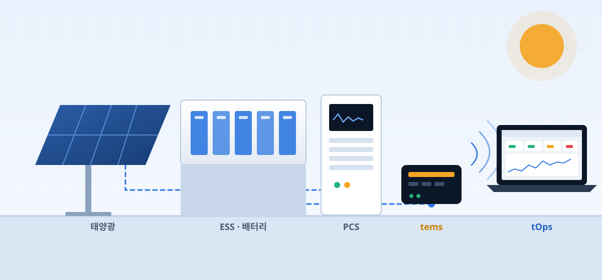
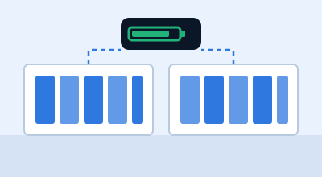
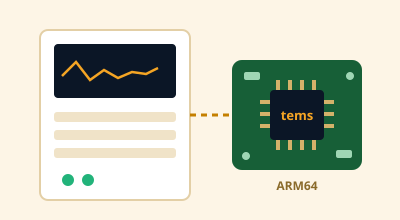
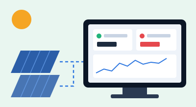

PRODUCTS
제어와 운영, 두 가지 제품
tems가 현장 설비를 제어하고, tOps가 그 tems 서버들을 원격에서 운영합니다.
HOW IT WORKS
현장 설비부터 운영자까지, 하나로 연결
장비 신호는 tems가 받아 제어하고, tems 서버의 상태와 설정은 tOps가 원격으로 관리합니다.

현장
설비 · 장비
PCS, BMS, 계측기, 태양광 인버터, I/O
tems
제어 엔진
장치 통신 · 제어 · 이벤트 · 이력 · 스케줄
tOps
원격 운영
brontod · tems 서버에 설치되는 운영 데몬
tdoctor · 운영자 PC의 관리 화면
사람
운영자 · 엔지니어
상태 확인, 장애 대응, 설정 변경, 배포
WHY BRONTO
브론토를 선택하는 이유
안정적인 제어
기능별로 분리된 프로세스 구조라 한 기능의 문제가 전체로 번지지 않습니다.
원격 운영
현장에 가지 않고도 상태 확인, 재시작, 설정 변경, 파일 배포까지 처리합니다.
빠른 장애 대응
현황판이 주의 항목을 먼저 보여주고, 바로 해당 노드로 들어가 조치합니다.
개발사 직접 지원
엔진과 운영 도구를 직접 개발한 팀이 현장 요구에 맞춰 기술 지원합니다.
SOLUTIONS
우리 회사에는 어떤 구성이 맞을까요?
사업 형태에 따라 필요한 제품이 다릅니다. 가장 많이 선택하는 구성을 안내해 드립니다.

ESS 사업자
여러 사이트의 배터리 설비를 24시간 안정적으로 운전하고, 원격으로 관리해야 합니다.
추천 구성tems + tOps 통합

PCS 제조사
자사 PCS에 넣을 검증된 컨트롤러 엔진이 필요합니다. ARM64 임베디드 환경을 지원합니다.
추천 구성tems (+ tOps 선택)

발전소 운영사
흩어진 현장을 한곳에서 감시하고, 장애가 나면 빠르게 조치할 수 있어야 합니다.
추천 구성tOps (+ tems)
PACKAGES
따로도, 함께도 도입할 수 있습니다
현재 환경에 맞춰 필요한 제품부터 시작하세요. 나중에 다른 제품을 더해도 됩니다.
tems 단독
설비 제어 엔진이 필요할 때
- 장치 통신 · 제어 엔진
- 이벤트 · 알람 · 이력 · 스케줄
- x64 / ARM64 지원
- 원격 현황판 · 모니터링
- 원격 설정 편집 · 배포
추천
tems + tOps 통합
제어부터 운영까지 한 번에
- 장치 통신 · 제어 엔진
- 이벤트 · 알람 · 이력 · 스케줄
- 다중 현장 현황판 · 모니터링
- 설정 편집 · 프로세스 제어 · 배포
- 도입부터 운영까지 단일 지원 창구
tOps 단독
이미 tems 서버를 운영 중일 때
- 다중 현장 현황판 · 모니터링
- 프로세스 제어 · 설정 편집
- 파일 배포 · 백업 · 원격 명령
- 계정 · 그룹 권한, 팀 채팅
- 설비 제어 엔진
REFERENCES
도입 사례
우리 현장에 맞는 구성, 함께 찾아보세요
도입 상담, 데모 요청, 기술 문의 모두 환영합니다. 담당자가 직접 연락드립니다.